Street Lights, What's The Big Deal?
You may be wondering, this is an odd page to be in a web design project? The specifications said the other two pages could be whatever we liked, so I chose this! I do a lot of work on industrial lighting and have worked on roadway illumination. For some reason lighting of all sorts is interesting to me and is a lot more involved than most people think. I collect and work on a lot of lighting fixtures, primarily street and roadway lights. I thought I would take this opportunity to share some of the common types of roadway lights. Not a lot of people are aware but roadway illumination techology is changing fast and much of the older technology is fading into history, of which I want to make sure is not forgotten.
Types of Street Lights
High Pressure Sodium
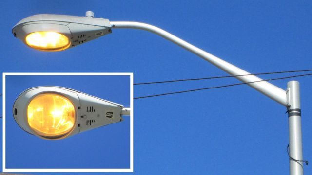 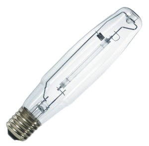High Pressure Sodium lamps are by far the most widely used method of roadway illumination. HPS lamps are an improvement on the older Low Pressure Sodium lamps, later discussed on this page. HPS lamps were first introduced on the market around 1964. High Pressure Sodium lamps are a very efficient method of illumination since their primary color output is really close to the colors our eyes are most sensitive to. They consume little electricity comapred to the amount of perceived light they output. Even though this technology is old, they are still a very effective method of illumination.
Mercury Vapor
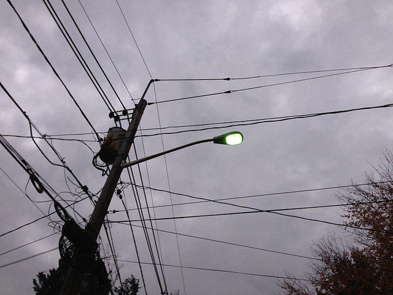 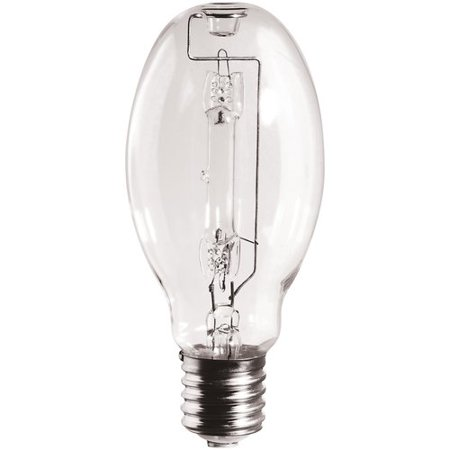Mercury Vapor lamps are also a very popular choice for illumination. They are much older than High Pressure Sodium and Low Pressure Sodium, coming to prominence around 1901. With being an older and less efficient technology, High Pressure Sodium became a more selected choice. While these produce less percieved light per watt of used electricity since they produce a more white color (which does not line up well with human vision sensitivity), they reproduce colors better since they are more white. This makes them a good choice for area lighting where color rendering is more desired, such as a garden or community area.
Metal Halide
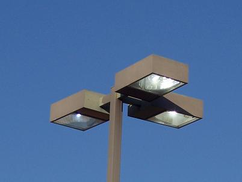 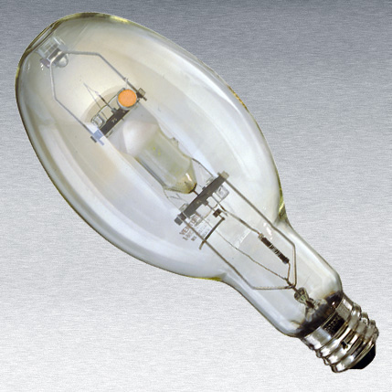Metal Halide lamps are pretty similar to Mercury Vapor and are arguably more used than Mercury Vapor today. Metal Halide lamps produce a much more pure white light which makes them very good at rendering colors. They are similar to Mercury Vapor in their chemical makeup, except Metal Halide lamps have Halide salts to add more colors to the light output, giving them the more pure white color. These lamps are used a lot in high traffic areas where a pleasant white light is desired, such as parks, some residential roadways, and community areas. These lamps are also a popular choice for stadium lighting for their pure light output. While the color output renders colors much more efficiently, they are technically even less efficient due to the perceived light output per watt, thus making High Pressure Sodium still more prolific.
Induction
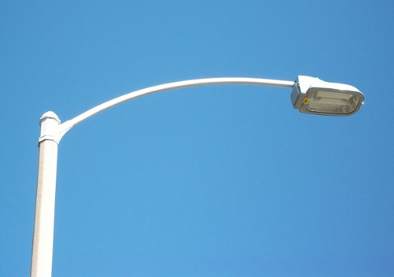 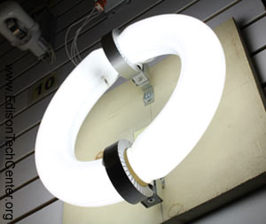Induction lamps are much more rare than the other lamps discussed here. They are actually a form of fluorescent lighting, such as the 4ft or 8ft glass tubes you commonly see. With induction, however, they are connected end to end to create a continuous ring with a coil aroud a section of the ring to induce an electromagnetic field in the ring. This field excites the mercury in the tube which causes the phosphor coating on the glass to glow. This lamp is much less efficient than High Pressure Sodium and similarly efficient to Mercury Vapor and Metal Halide. Induction lamps have decent color rendering due to their white light. Unfortunately, this also makes them less efficient. One of the major advantages of these bulbs is the even light spread because of the size of the induction ring and surface area that produces the light.
Low Pressure Sodium
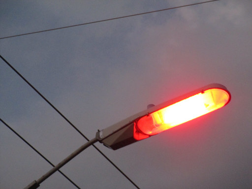 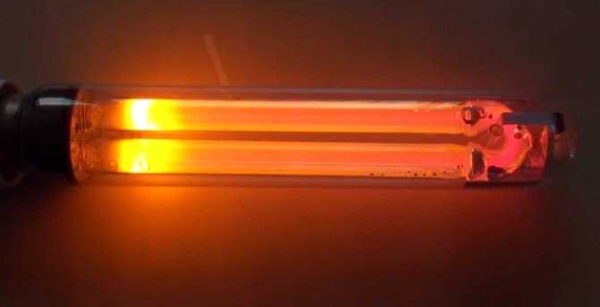Low Pressure Sodium was a revolutionary technology being it was the first ever Sodium Vapor lamp. LPS lamps utilize Neon and Argon to start a long arc in a U shaped glass tube. This is why when LPS lamps start they are redish pink in color. Over a few minutes, as the lamp heats up, the liquid sodium metal in the tube will become excited, turning into vapor and start glowing a lurid yellow. LPS lamps are almost completely monochromatic, meaning they output a single wavelength of light. This makes them unable to render any colors, causing everything lit by them to appear monochromatic and flat. While this light is unappealing, these lamps are extraordinarily efficient in their light output. They were designed to output as much light as possible as close to peak human eye light sensitivity. This technology is still in service today but is no longer installed as new since the technology is quite old.
LED
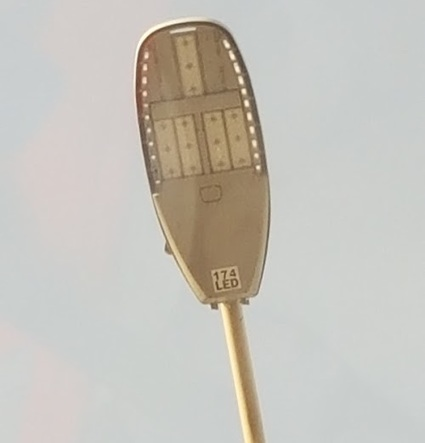 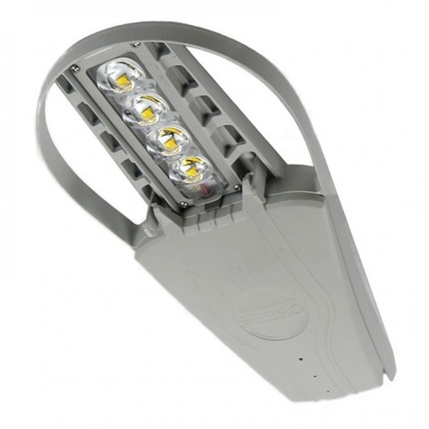Slowly but surely, all of the above lamps are being replaced by either retrofit LED lamps or completely new LED fixtures. LED roadway lighting comes in many forms of color output, light pattern design, and brightnesses. LED luminaires are, by far, the most efficent method of roadway lighting out there today. The lifespan of LED's are far superior to all of the lamps above, mainly why LED roadway illumination is sold as an entire fixture and has LED's that are non-replaceable.